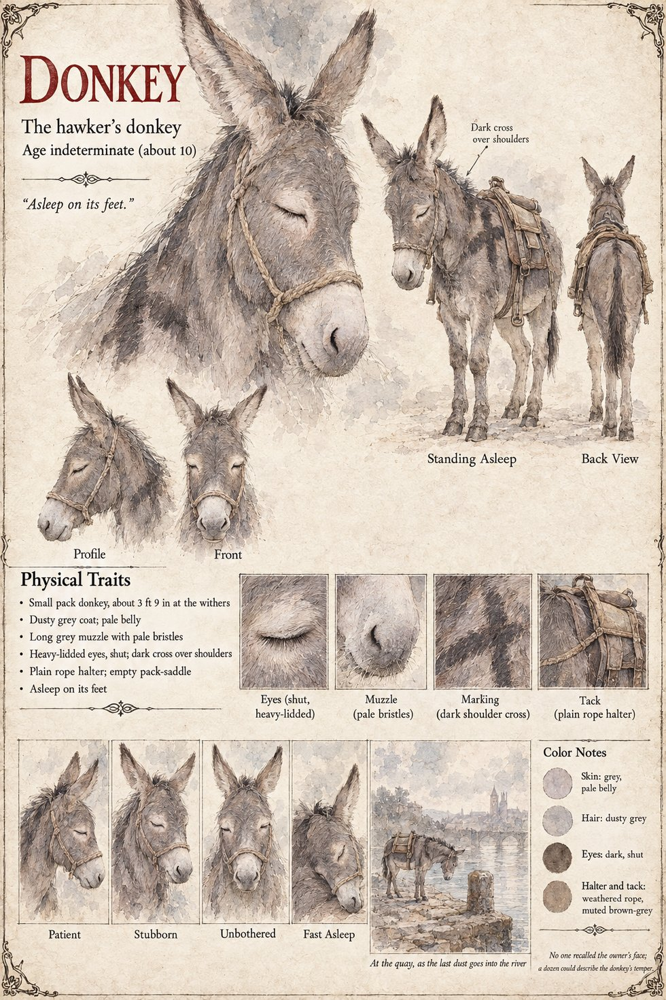

Donkey
The hawker's donkey · about 10 by its sheet · asleep on its feet
The hawker's donkey: a small, dusty-grey pack donkey with a pale belly, a long muzzle with pale bristles and a dark cross over the shoulders, in a plain rope halter and an empty pack-saddle, which the sheet draws asleep on its feet. The hawker is the one in the Low Market who names the sum of nine pennies to Ansbert for a linen sack of black powder: the Black-Salt Peddler of the publication notes, who is also Observer 614 (a figure with no sheet, and so no page of his own here), and whom Sigebert Marl follows, for sixty marks, as far as the river-gate and no farther. The sheet's last line is the one the page can lean on: No one recalled the owner's face; a dozen could describe the donkey's temper.
Its one scene, At the quay, as the last dust goes into the river, draws the animal alone on a stone quay beside the water, a bridge and a cathedral town far across it. The notes put that scene in Chapter 17, and the donkey's first appearance in Chapter 2, asleep on its feet behind the peddler when he sells the sack; neither the sheet nor the notes say whose hand lets the dust go. Its expression panels run Patient, Stubborn, Unbothered and Fast Asleep. Written from the sheet, from what the other Case 4181 pages already say, and from the character notes in the case's publication-prep file; the manuscript itself was not to hand. Its age of about 10 (given as indeterminate), its height of about 3 ft 9 in at the withers, dusty grey coat, shut heavy-lidded eyes and weathered brown-grey tack are the sheet's own, as is its pull-quote, Asleep on its feet.
“Asleep on its feet.”
Appears In

Related Subjects


Related Records

At grey dawn in the Low Market the Black-Salt Peddler loosens the thong of a linen sack, and Ansbert draws one thick forefinger through the dull black powder and leaves a hair-thin silver line along the trestle's edge; the hawker's donkey sleeps on its feet behind the peddler. Ansbert pays nine pennies, the month's stall-rent, for the sack.